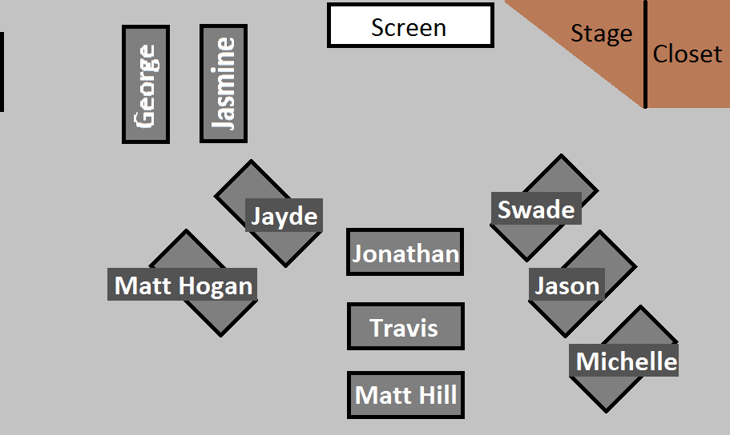

class: center <div id="seating-chart" style="width: 100%;">  </div> --- class: center, middle # Unit 3 ## Back-End Java --- <!-- TODO --> ### About This Unit --- ### Important Unit 3 - [Class Schedule](https://education.launchcode.org/skills-back-end-java/classes/) - [Slides](https://aleesham.github.io/2018fall-lc101/) - [Discourse](https://help.launchcode.org/) - Other Resources: - [Codecademy](https://www.codecademy.com/) - [Pluralsight](https://www.pluralsight.com/) - Click [here](https://my.visualstudio.com/benefits) to get a one-month subscription. You may have to create an account. --- ### Structure of Unit 3 Classes 1. General Announcements 1. Graded Exercise Clarifications 1. Studio Solution 1. "Lecture" 1. Studio Walkthrough 1. Studio 1. Work on Exercises/HW/Whatever --- class: center, middle # [Class 1 Lecture](https://education.launchcode.org/skills-back-end-java/class-prep/1/) --- <!-- TODO --> ### Topics --- <!-- TODO --> ### Lecture --- class: center, middle # Q&A --- class: center, middle # [Studio Walkthrough](https://education.launchcode.org/skills-back-end-java/studios/area/) ### Area of a Circle --- <!-- TODO --> ### Studio Walkthrough: Area of a Circle --- class: center, middle # [Find your TA](https://learn.launchcode.org/courses/144/users)